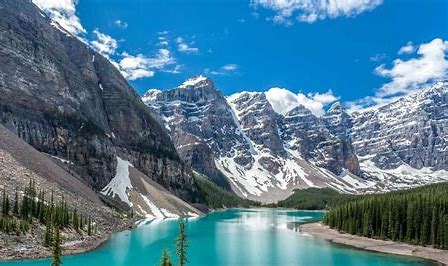
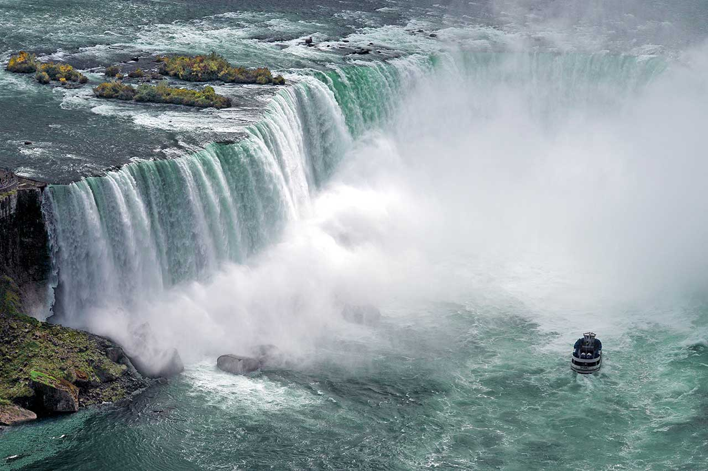
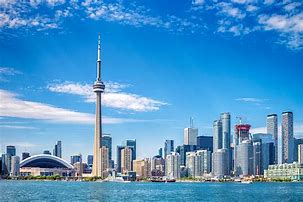

Descubra o Canadá
Pontos Turísticos

Montanhas Rochosas
As Montanhas Rochosas canadenses são conhecidas por seus picos nevados, lagos cristalinos e trilhas espetaculares.
"Um lugar mágico, onde a natureza te abraça. As trilhas são desafiadoras e as paisagens são de cinema!" – Lucas P.

Cataratas do Niágara
Um dos pontos turísticos mais icônicos do Canadá, as Cataratas impressionam pela força e beleza.
"Ouvir o som das quedas d'água e sentir a brisa no rosto é uma experiência única!" – Mariana R.

Toronto e CN Tower
A cidade cosmopolita de Toronto abriga a famosa CN Tower, de onde se tem uma vista panorâmica incrível.
"Toronto é vibrante! Subir na CN Tower foi o ponto alto da viagem." – Felipe M.
Cultura Canadense
Língua
Curiosidades
Culinária
Um prato típico canadense é o Poutine, feito com batata frita, molho e queijo coalho. Também são populares o salmão defumado, xarope de bordo (maple syrup) e a tourtière.